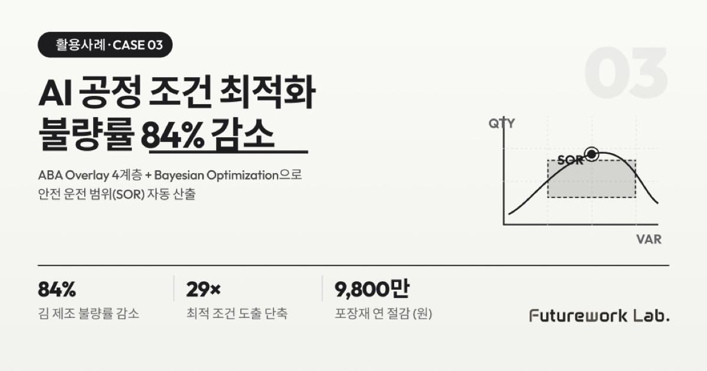

본 사례는 다공정 제조사 프로핸즈(주입·사출, 김 제조, 인쇄, 포장재)와 함께 진행한 AI 공정 조건 최적화 프로젝트를 기반으로 정리했습니다. "조건 선택 오류"라는 손실의 진짜 원인을 데이터로 입증하고, 안전 운전 범위(SOR)를 자동으로 계산하는 시스템을 구축한 과정을 공유합니다.
왜 다공정 제조에 "조건 선택 오류"가 60%인가
이 회사는 주입(사출), 김 제조, 인쇄, 포장재 등 서로 다른 공정을 동시에 운영합니다. 분석 결과, 다음과 같은 구조적 문제가 드러났습니다.
- 공정 손실의 60% 이상이 "제어 실패"가 아니라 "조건 선택 오류"에서 발생 → 연 매출 대비 3~8% 손실, EBIT(영업이익)을 2%만 줄여도 30~50% 개선 가능
- 주입1호기 실제 데이터 (860배치 분석):
- 세팅구간(경과시간 ≤5분) 불량률 6.22% — 전체 평균의 44배
- LOT 변경 직후 + 세팅 미안정 조합 시 불량률 38.1%
- 불량 원인 1위: MFI(원료 유동성) — p-value 6.34e-08로 통계적 확실성 극히 높음
- 포장재(PP 필름): 일일 LOSS 1,424.4kg — 연간 약 6.41억 원 손실
- 의사결정 공백: 경험·감각 의존 → 재현성 낮고 지식 편차 큼 → "조건 조합을 계산하는 체계"가 부재
핵심 컨셉 — "AI는 판단하지 않고, 선택지를 계산한다"
핵심 컨셉은 ABA AI-OPT(M) Overlay입니다. 운영 시스템 위에서 작동하는 Read-only 공정 분석·권고 시스템으로, PLC/SCADA(현장 제어 시스템)에 접속하지 않고 권고만 제공합니다. 안전성과 책임 소재가 명확합니다.
기술 방법론 — 4계층 구조
| 계층 | 이름 | 역할 |
|---|---|---|
| L1 | RCA Overlay | 원인 구조 고정 — 불량 원인을 7단계로 추적 |
| L2 | Process Mapper | 문제 구간 한정 — 위험 구간 자동 발견 |
| L3 | Variable Analyzer | 영향 변수 분해 — 다변량 상관 분석 + 기여도 산출 |
| L4 | Rule Engine + XAI | 위험 조건 조합 정의 — AI 의사결정 추적성 보장 |
Bayesian Optimization으로 SOR(Safe Operating Range, 안전 운전 범위) 산출: 단일 최적값이 아닌 안전 운전 범위(상한·하한·신뢰구간·회피영역)를 제시합니다. 소량 데이터(200~2,000 배치)에서도 작동합니다.
4가지 허들과 해결 과정
| 허들 | 문제점 | 해결 |
|---|---|---|
| ① 도메인 일반화 문제 | 각 산업(주입·김 제조·인쇄·필름)의 엔티티·변수가 완전히 다름 | 가설 기반 요구사항 정리 → 도메인 맥락 후조정. 주입1호기 860배치 데이터로 검증된 L2~L4 구조 확보 |
| ② 소량 데이터에서의 신뢰성 | PoC 단계에서 200~2,000개 배치 수준 데이터만 확보 가능 | Bayesian Optimization이 소량 데이터에 특화된 점 활용. 주입1호기 860배치(4개월) 데이터로 R² > 0.95 달성 |
| ③ MES 연동 복잡도 | 운영 시스템·공급사별 스키마 상이 | MES Read-only Connector 표준화 (API/MCP 기반), MES 측 미팅을 통해 DB 테이블 확정 |
| ④ BPM vs RSM 내부 논쟁 | BPM 기반 RSM 구현(템플릿 복제·확장) vs RSM 순서 고정·도메인별 엔티티 차이로 단순 복제 불가, 두 의견 충돌 | BPM은 내부 제품용으로만 인정, 사업 수행 시 RSM 프로세스 우선 |
결과 — 주입1호기 실증 (860배치, 364,777개 생산)
| 분석 항목 | 결과 |
|---|---|
| 불량 기여도 1위 변수 | MFI(g/10min), p-value = 6.34e-08 |
| 위험 규칙 도출 | 10개 L4 규칙 (R1~R11) |
| 가장 위험한 조합 | LOT변경직후 + 경과시간≤5분 → 불량률 38.1% |
| SOR (주입압력) | 82.78~106.5 bar |
| SOR (배럴온도 1존) | 190.78~214.2°C |
| SOR (금형온도) | 27.48~49.5°C |
| MFI 안전 범위 | 18.4~24.0 g/10min (24 초과 LOT는 위험 분류) |
시나리오별 개선 효과
| 지표 | 기존 | 개선 | 비고 |
|---|---|---|---|
| 김 제조 불량률 | 18.5% | 3% | 84% 감소 |
| 김 제조 최적 조건 도출 시간 | 30~60분 | 1~2분 | 29배 단축 |
| 김 제조 시행착오 횟수 | 5~10회 | 1~2회 | 80% 감소 |
| 인쇄 색상 편차 (Delta-E) | 3.5 | 1.5 | 57% 개선 |
| 포장재(PP 필름) 연간 LOSS 비용 | 6.41억 원 | 5.61억 원 | 연 9,800만 원 절감 |
AX Flow와의 연결 — Govern · Structure · Execute 레이어
본 사례는 AX Flow의 4-Layer 운영 구조 중 Govern과 Structure 레이어의 역할이 가장 두드러진 사례입니다. Govern 레이어의 Read-only 원칙이 PLC·SCADA 직접 제어로 인한 사고 책임 부담을 차단하고, AI는 권고만 제공해 사람이 실행하는 거버넌스 구조를 확립했습니다. Structure 레이어는 RCA Overlay부터 Variable Analyzer까지 4계층(L1~L4) 도메인 온톨로지를 정의해, 김 제조·인쇄·포장재 등 공정이 달라도 같은 구조 위에서 분석을 재사용할 수 있게 했습니다. Execute 레이어의 Bayesian Optimization 모듈이 소량 데이터(860배치)에서도 SOR을 계산해 즉시 운영 가능한 규칙을 도출합니다.
해당 사례 시사점 3가지 — 공정 최적화
첫째, "제어 실패"가 아니라 "조건 선택 오류"가 손실의 본질입니다. 같은 설비, 같은 원료, 같은 작업자라도 조건 조합에 따라 불량률이 6배 이상 차이 납니다. 손실의 60%는 여기서 나옵니다.
둘째, "단일 최적값"이 아니라 "안전 운전 범위(SOR)"가 실용적입니다. 현장에서는 정확한 한 값이 아니라 "이 범위 안이면 안전하다"는 가이드라인이 즉시 쓸 수 있는 정보입니다.
셋째, Read-only가 책임 소재를 정리합니다. AI가 PLC를 직접 제어하면 사고 시 책임이 모호해집니다. 권고만 제공하고 실행은 사람이 하면, AI는 자유롭게 실험할 수 있습니다.
EBIT 2% 개선이 영업이익 30~50% 개선으로 직결됩니다. 공정 최적화는 "신기술 도입"이 아니라 "기존 손실의 회수"입니다.
함께 읽으면 좋은 글
- AI 기반 생산 스케줄 자동 추천 — 우선순위 배정 60배 단축
- AI 문서 검토·교정·비교 — PM 월간 검토 시간 85% 감소
- 제조 특화 RAG 지식 그래프 — 비정형 문서를 검색 가능한 지식으로
- 제조AI특화 스마트공장 완벽 가이드 — 800억 원, 400개 기업 선정 전략
본 사례는 AX Flow Usecase 자료 p.4~6 (Case 3) 기반으로 작성되었습니다.
#AI공정최적화 #RSM공정조건 #ABAOverlay #BayesianOptimization #MESReadOnly #제조불량률감소 #다변량상관분석 #XAI제조 #안전운전범위 #김제조인쇄포장재